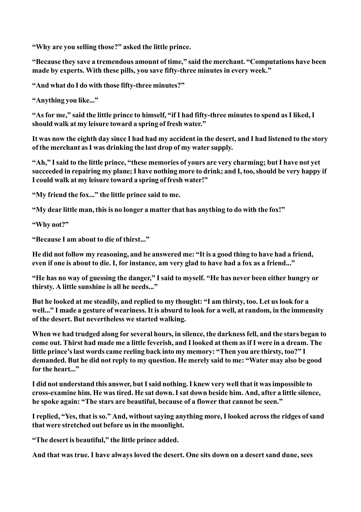

“Why are you selling those?” asked the little prince. “Because they save a tremendous amount of time,” said the merchant. “Computations have been made by experts. With these pills, you save fifty-three minutes in every week.” “And what do I do with those fifty-three minutes?” “Anything you like...” “As for me,” said the little prince to himself, “if I had fifty-three minutes to spend as I liked, I should walk at my leisure toward a spring of fresh water.” It was now the eighth day since I had had my accident in the desert, and I had listened to the story of the merchant as I was drinking the last drop of my water supply. “Ah,” I said to the little prince, “these memories of yours are very charming; but I have not yet succeeded in repairing my plane; I have nothing more to drink; and I, too, should be very happy if I could walk at my leisure toward a spring of fresh water!” “My friend the fox...” the little prince said to me. “My dear little man, this is no longer a matter that has anything to do with the fox!” “Why not?” “Because I am about to die of thirst...” He did not follow my reasoning, and he answered me: “It is a good thing to have had a friend, even if one is about to die. I, for instance, am very glad to have had a fox as a friend...” “He has no way of guessing the danger,” I said to myself. “He has never been either hungry or thirsty. A little sunshine is all he needs...” But he looked at me steadily, and replied to my thought: “I am thirsty, too. Let us look for a well...” I made a gesture of weariness. It is absurd to look for a well, at random, in the immensity of the desert. But nevertheless we started walking. When we had trudged along for several hours, in silence, the darkness fell, and the stars began to come out. Thirst had made me a little feverish, and I looked at them as if I were in a dream. The little prince’s last words came reeling back into my memory: “Then you are thirsty, too?” I demanded. But he did not reply to my question. He merely said to me: “Water may also be good for the heart...” I did not understand this answer, but I said nothing. I knew very well that it was impossible to cross-examine him. He was tired. He sat down. I sat down beside him. And, after a little silence, he spoke again: “The stars are beautiful, because of a flower that cannot be seen.” I replied, “Yes, that is so.” And, without saying anything more, I looked across the ridges of sand that were stretched out before us in the moonlight. “The desert is beautiful,” the little prince added. And that was true. I have always loved the desert. One sits down on a desert sand dune, sees
